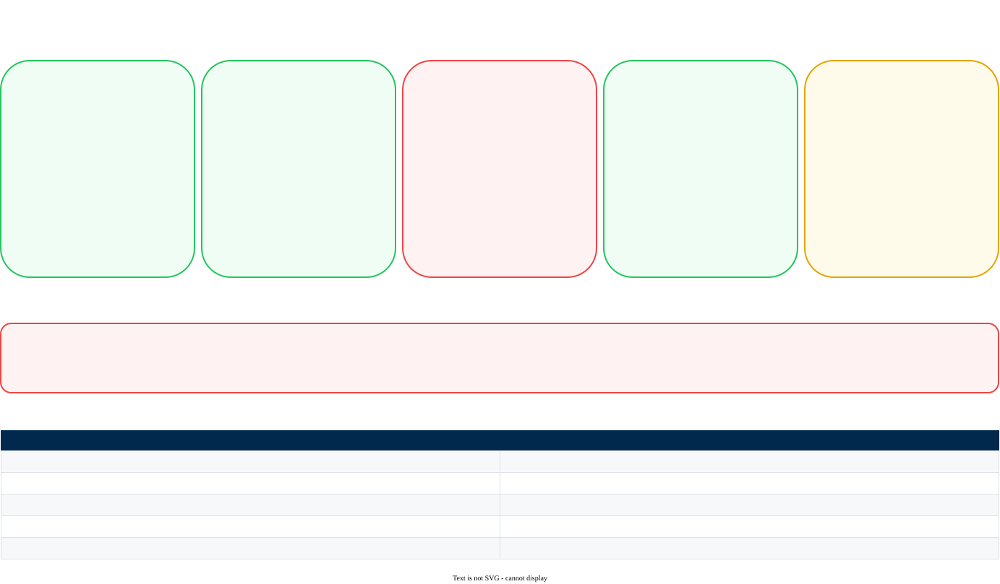

Hybrid Gateway Fault Tolerance
What breaks the gateway, what does not, and what to build for a production deployment
This document is for the team that operates the gateway. It examines each thing that can fail, and it tells you what the users see in each case.
The gateway tolerates a Management Plane outage very well. It holds its configuration in a cache for seven days. It continues to answer requests from that cache. It queues its analytics, and it sends them when the connection returns.
The weak points are in your own infrastructure, and the chart defaults do not protect you from them. Sections 4 and 5 are the ones to read.
1. What can fail

| What fails | Effect on traffic | Section |
|---|---|---|
| One gateway pod | None, with 3 replicas | 2. A pod |
| One node, or one zone | None, if you spread the pods | 3. A node or a zone |
| The cache | Severe | 4. The cache |
| The Management Plane | None for 7 days | 5. The Management Plane |
| A model provider | None, if you configure a fallback | 6. A model provider |
2. A pod fails
A gateway pod holds no state of its own. All shared state is in the cache. This makes a pod easy to replace.
Set three replicas or more. One replica is the chart default, and one replica means that each pod failure is a full outage.
replicaCount: 3
resources:
requests:
cpu: 1
memory: 2Gi
limits:
memory: 4GiThe product documentation recommends 1 to 2 CPU cores and 2 to 4 GB of memory for each gateway instance. The values above start at the lower end of that range.
The readiness probe runs every 60 seconds, and it permits three failures. A pod that stops working correctly can therefore receive traffic for about three minutes before Kubernetes removes it.
For production, lower readinessProbe.periodSeconds to 10. The pod then leaves service in about 30 seconds.
3. A node or a zone fails
Three replicas do not help if Kubernetes puts all three on one node, or in one availability zone. Tell Kubernetes to spread them.
topologySpreadConstraints:
- maxSkew: 1
topologyKey: topology.kubernetes.io/zone
whenUnsatisfiable: ScheduleAnyway
labelSelector:
matchLabels:
app.kubernetes.io/name: gatewayA PodDisruptionBudget tells Kubernetes how many pods must stay available during a voluntary disruption. A node drain is a voluntary disruption, and a cluster upgrade drains every node in turn.
Without one, a drain can stop all of your gateway pods at the same time. Three replicas do not prevent this. A correct deployment strategy does not prevent this.
Write your own. The scaling and upgrade page gives one.
4. The cache fails
This is the weakest point in the architecture. Read this section carefully.
The cache is a Redis instance, or a compatible service. It holds two different things:
| What it holds | Detail |
|---|---|
| Configuration objects | API keys, virtual keys, configs, prompt templates, prompt partials, guardrails and integrations. Each has a 7-day TTL. Each is written on first use, and not before. |
| Usage counters | Token usage and cost usage. The gateway accumulates them here, and a worker sends them to the Management Plane each minute. |
| LLM responses | Only when you turn caching on. This is optional. |
4.1 — What happens when the cache is lost
| Effect | Detail |
|---|---|
| Configuration is re-fetched | Each object is read from the Management Plane on its next use. The gateway recovers on its own. |
| Latency increases for a time | Each first request for an object waits for the Management Plane. |
| Unsent usage counters are lost | The counters since the last flush are gone. The loss is small, because a flush runs each minute. |
| Rate limits and budgets reset | These states live in the cache. A limit can permit more traffic than you intend until the state rebuilds. |
The two failures are survivable one at a time. Together they are not. The gateway cannot read a configuration object from an empty cache, and it cannot fetch it from a Management Plane it cannot reach.
Give the cache its own high availability. Do not put the cache on the same node as the gateway pods. Use the managed service of your cloud, with a replica.
4.2 — Check the eviction policy
A cache has a memory limit. The eviction policy decides what happens when it is full.
noeviction makes every new write fail once the limit is reached. No new object enters the cache. This is the default policy in Redis, so you get it unless somebody changed it.
Use an LRU policy instead, such as allkeys-lru. The cache then removes the least recently used entries, and it continues to accept new ones. An evicted entry behaves the same as an expired one: the next request fetches it again.
Check this value on the day you build the cache. The symptom is difficult to recognize later, because the gateway continues to work and only becomes slower.
A random eviction policy also works, and it is worse than LRU. It can remove an object that is in constant use.
5. The Management Plane fails
This is the failure the architecture handles best. Your traffic continues.
| Continues to work | Stops working |
|---|---|
|
|
Analytics are queued in memory and sent when the connection returns. No analytics are lost, unless the pod restarts first.
The configuration cache has a 7-day TTL. An outage shorter than that does not reach the users. This gives you a long time to repair the connection.
Earlier versions of the product documentation described private connectivity to the Management Plane, with AWS PrivateLink, Azure Private Link and GCP Private Service Connect.
The current documentation does not. The architecture page states one requirement: outbound HTTPS access to the Management Plane endpoints. Every private connectivity instruction was removed from the hybrid deployment pages between September and November 2026.
Treat outbound HTTPS as the supported path when you plan a new deployment. If you operate a private connection today, ask Palo Alto Networks whether it continues to be supported before you change anything.
6. A model provider fails
A provider outage is the failure you cannot repair. The gateway gives you four features for it, and all four are configuration rather than code.
| Feature | What it does | When to use it |
|---|---|---|
| Fallbacks | You give a list of providers in order. The gateway uses the next one when the first fails. | Always, for a production application. This is the single most valuable one. |
| Automatic retries | Up to five attempts, with exponential backoff. It can respect the provider Retry-After header. |
For a provider that fails briefly and often. |
| Circuit breaker | It stops sending requests to a target that keeps failing. It tries again after a cooldown. | To stop a slow provider from making your own application slow. |
| Load balancing | It distributes traffic across providers, across models, or across several keys for one provider. | To stay below a per-key rate limit, and to reduce the effect of one provider. |
The circuit breaker uses these settings:
| Field | What it sets |
|---|---|
failure_threshold | The number of failures that opens the circuit. |
failure_threshold_percentage | A failure rate that opens the circuit. Optional. |
cooldown_interval | The time in milliseconds before a new attempt. The minimum is 30 seconds. |
failure_status_codes | The HTTP codes that count as a failure. The default is above 500. |
minimum_requests | The number of requests before the rate is evaluated. Optional. |
A fallback to a second provider works only if that provider already has an integration, and only if the model is provisioned on it. Build the second integration before you need it.
Test the fallback. The simplest test is a deliberately wrong credential on the first provider.
7. What to monitor
The gateway exposes Prometheus metrics on the gateway port at /metrics. Set ENABLE_PROMETHEUS to true.
| Metric | What it tells you |
|---|---|
portkey_request_duration_milliseconds | The total time for a request, through the gateway. |
llm_request_duration_milliseconds | The time the provider took. Compare it with the metric above to see the cost of the gateway itself. |
portkey_processing_time_excluding_last_byte_ms | The gateway processing time, without the streaming time. |
llm_cache_processing_duration_milliseconds | The time the cache took. |
llm_token_sum and llm_cost_sum | Tokens and cost. A sudden fall to zero can mean a streaming configuration problem. |
http_request_duration_seconds | The standard HTTP distribution. |
From gateway 2.30.0 there is a second metrics port, 9091. It reports the CPU, memory and file usage of the new front-end process. Keep it on your monitoring network only.
- Ready replica count below 2. This finds a failed rollout and a bad node before a user does.
- Cache memory above 80 percent. With
noevictionthis is the warning before writes fail. - A rise in provider duration with no rise in gateway duration. The problem is the provider, and a fallback is the answer.
8. Production checklist
replicaCountis 3 or moreresources.requestssets CPU and memory- A topology spread constraint across zones is applied
- A PodDisruptionBudget is applied, and its selector matches real pods
readinessProbe.periodSecondsis lowered to about 10- The deployment strategy sets
maxUnavailable: 0
- The cache is a managed service, and not a pod in the same cluster
- The cache has a replica, or a high availability mode
- The eviction policy is an LRU policy, and not
noeviction - The memory limit is large enough for your configuration objects
- An alarm exists for cache memory above 80 percent
- Outbound HTTPS to the Management Plane endpoints is permitted
- Outbound HTTPS to each model provider is permitted
- TLS inspection does not break these paths
- You know that the gateway serves traffic for 7 days without the Management Plane
- A fallback provider is configured for each production application
- The fallback has its own integration, with the model provisioned
- The fallback is tested
- Automatic retries are configured
- A circuit breaker is configured for a slow provider
ENABLE_PROMETHEUSistrue, and the endpoint is collected- An alarm exists for ready replicas below 2
- Gateway duration and provider duration are on one dashboard